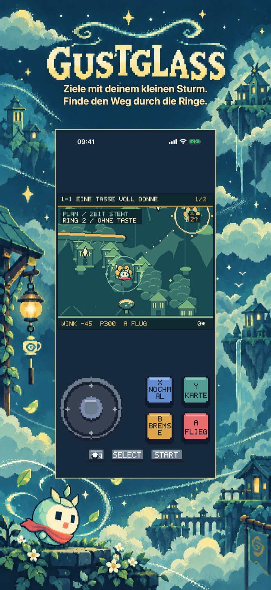
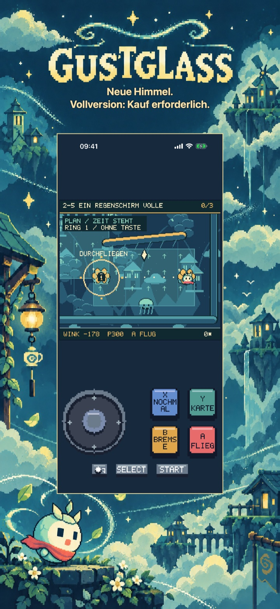
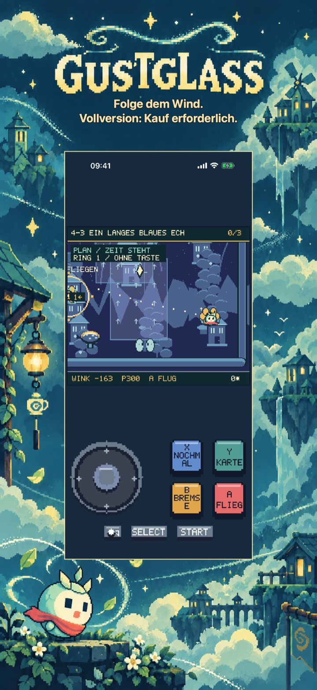
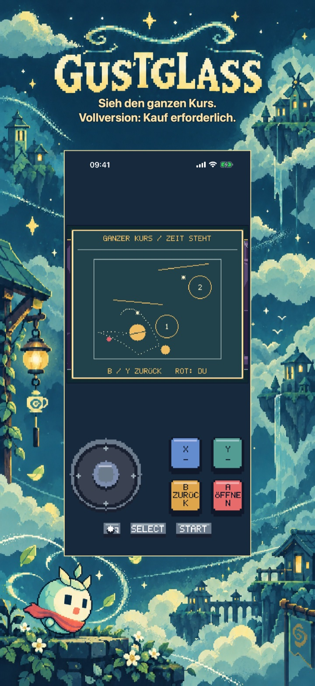
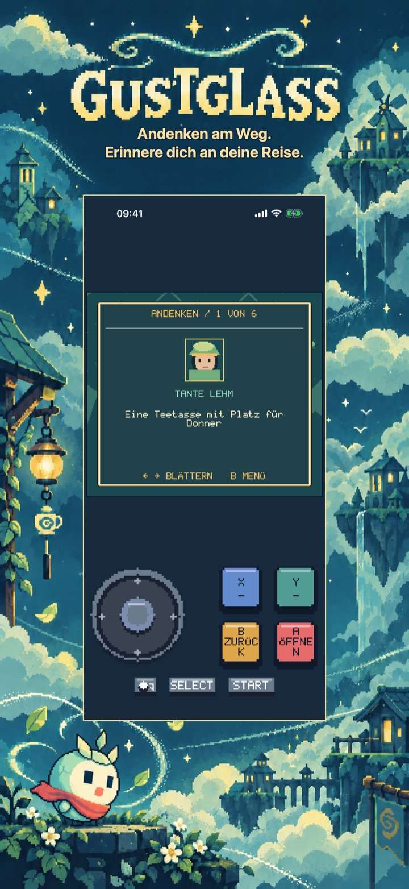
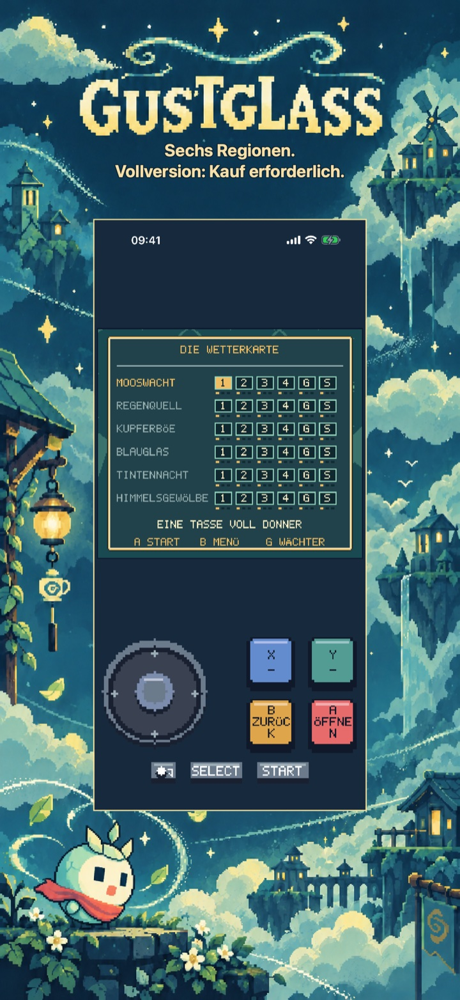

Gustglass: Flugwege
Gustglass: Flugwege
Ziele mit Mica durch weite Windringe und sanfte Banden. Plane und wiederhole Würfe in sechs Regionen, 30 Story-Kursen und sechs Böen. Erste Region gratis.
Demnächst im App Store
Die erste Region: fünf vollständige Story-Kurse, einschließlich des Wächters.

Pixelabenteuer
Eine eigene Reise für dieses Spiel
Sechs Regionen enthalten 30 Story-Kurse mit sechs Wächtern sowie sechs optionale Böen. Sammle Fragmente und optionale Wurf-Par-Marken, insgesamt bis zu 108. Kein Lebenslimit. Planungszeit verändert nicht denselben Wurf; neue Versuche behalten Ringe und Fragmente. Deine Reise wird lokal gespeichert.
Beginne mit dem kostenlosen Einstieg
Die erste Region: fünf vollständige Story-Kurse, einschließlich des Wächters.
Schalte fünf weitere Regionen, 25 weitere Story-Kurse, alle sechs Böen, alle Andenken sowie die vollständige Geschichte und das Ende frei.
Einmalkauf · Keine Werbung · Kein Abo
Gustglass: Flugwege
Bring einen kleinen Sturm heim
Finde den Heimweg für Mica, einen kleinen Sturm in einer gesprungenen Samenhülle.
Plane einen wiederholbaren Flug durch weite nummerierte Windringe. Stelle im Nest Winkel und Kraft ein, starte, lenke sanft und bremse in der Luft. Banden, Äste, Wind und Wasser formen den Weg. Ein neuer Versuch stellt Winkel, Kraft und Wetterphase wieder her; blaue Spur und Vorhersagepunkte helfen beim Anpassen.
Sechs Regionen enthalten 30 Story-Kurse mit sechs Wächtern sowie sechs optionale Böen. Sammle Fragmente und optionale Wurf-Par-Marken, insgesamt bis zu 108. Kein Lebenslimit. Planungszeit verändert nicht denselben Wurf; neue Versuche behalten Ringe und Fragmente. Deine Reise wird lokal gespeichert.
Die erste Region: fünf vollständige Story-Kurse, einschließlich des Wächters.
Schalte fünf weitere Regionen, 25 weitere Story-Kurse, alle sechs Böen, alle Andenken sowie die vollständige Geschichte und das Ende frei.
Keine Werbung, Konten, Analyse oder Abonnements. Ein nicht verbrauchbarer Kauf schaltet das ganze Spiel dauerhaft frei. Apple StoreKit verarbeitet Kauf und Wiederherstellung; der Preis erscheint vor der Bestätigung. Englisch, Spanisch, Französisch, Deutsch und Italienisch sind enthalten. Alle Spielinhalte liegen lokal vor.
Im Spiel
Im Spiel
Sechs native Ansichten zeigen die Spielidee, zwei weitere Welten, tieferes Spiel, Reisebelohnungen und das Titelmenü oder den Atlas.
Finde den Weg durch die Ringe.

Vollversion: Kauf erforderlich.

Vollversion: Kauf erforderlich.

Vollversion: Kauf erforderlich.

Erinnere dich an deine Reise.

Vollversion: Kauf erforderlich.
Spielvideo auf Englisch
Ein 24-sekündiges Spielvideo auf Englisch. Zusätzliche Inhalte erfordern einen einmaligen Vollspielkauf.
Hilfe & Support
Fragen zu Gustglass: Flugwege?
Hier findest du praktische Antworten zu Steuerung, Spielstand, kostenlosem Einstieg und dem Kauf der Vollversion.
Wie spiele ich?
Wo wird mein Fortschritt gespeichert?
Was kann ich kostenlos spielen?
Was schaltet der Vollversionskauf frei?
Einmalkauf · Keine Werbung · Kein Abo
Wie stelle ich einen Kauf wieder her?
Mein Kauf ist ausstehend oder der Store nicht verfügbar. Was kann ich tun?
Support kontaktieren
Stelle eine Frage oder melde ein Problem. Nenne das Spiel, dein Gerät und was passiert ist.
Kontaktiere uns auf GitHubMeldungen sind öffentlich und erfordern ein GitHub-Konto.